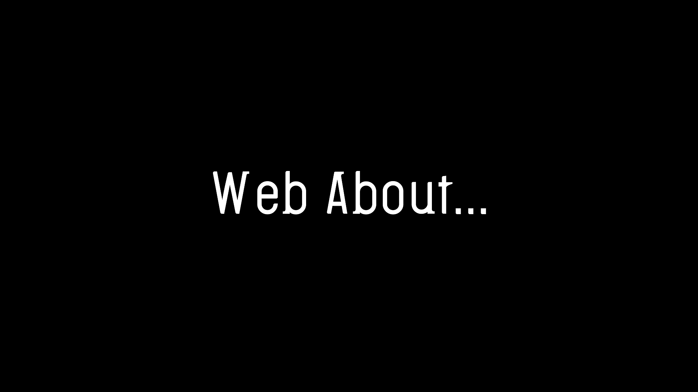

はじめに
このページとあるWebチームの業務の一環で作成したものです。
本来は業務内でしか共有していませんがスマホでの視認チェックのためにこちらでも作成してみてます。
こんな人が制作しています。
タイトルの意味
Web About...という名前は、Webに関していろんなことをやってみようというコンセプトで名付けたものです。
このホームページのデザインについて
無駄に白くて、無駄に余白あるでしょ？安心してください。わざとです。
べつにフリー素材使ってもよかったんですけども、今回は「2010年くらいのホームページ」をモデルに作成しています。
テーマファイルは一切使っていません。全部私の手作りです。
ちなみにホームページの元ネタは「iida」という、auが昔やっていたおしゃれブランドのホームページです。
これはかつてFlashがゴリゴリ使われているサイトなんですが、令和の時代にFlashなんて文化は滅んでしまったので、泣く泣くjQueryと自作のCSSでそれっぽく作っている感じです。
ホームページデザインの(個人的コンセプト)
- できるだけシンプルに。
- 分かりやすく、はっきりと。
- 他人に見てもらいやすいものを。
最近のごちゃごちゃしたデザインは個人的には嫌いです。広告とかバンバン出ているサイトとかがありますね。
そうではなく基本的にはシンプル。できるところは豪華に。をモットーに編集していきます。
デザインとしても、内容としてもですね。Macはヒラギノ角ゴシック、Windowsはメイリオで書いてみるといいかもしれませんね。
(最近はMacとWindows両方にある游ゴシックが主流になりつつありますが、Macが普通に見えるのにWindowsだと極端に細くなるという現場を見ているので個人的にはあまり好きではないです。)
font-familyにはsans-serifを。
どれだけクオリティが高いものでも誰も見なければ意味がありません。他人に見てもらいやすい。そんなページを目指します。
ざっと書いてみましたが、こんな感じで進めていこうと思います。